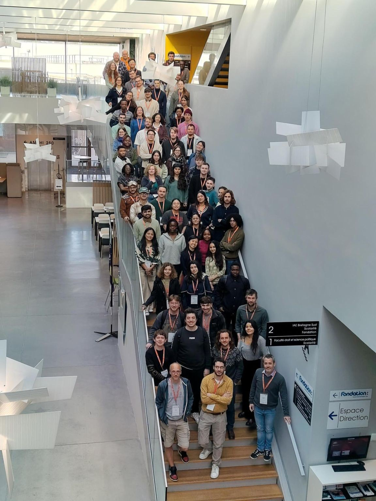
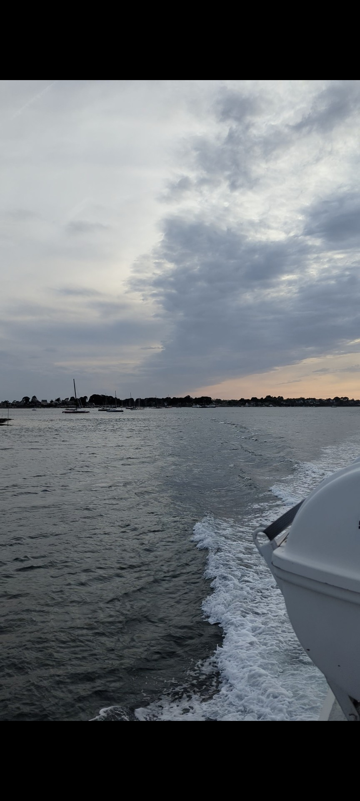

From April 8–10, I had the opportunity to attend the AI4EO Spring School in Vannes, France — a three-day event hosted by Université Bretagne Sud and organized by the OBELIX research group in collaboration with ESA's Phi-Lab, the Copernicus Master in Digital Earth program, and the SequoIA AI cluster. The spring school brought together graduate students, researchers, and Earth Observation enthusiasts from across Europe for a packed programme of lectures, hands-on sessions, and a closing data challenge.

AI4EO Spring School participants, April 2026, VannesFoundation Models and the Limits of What I Know
The spring school opened with a welcome address by Sébastien Lefèvre before diving straight into the science. The first lecture, delivered by Iris de Gélis, explored deep learning methods for change detection in 3D point clouds — a niche but compelling intersection of computer vision and geospatial analysis. This was followed by a talk from Stéphane May, research engineer at CNES (the French space agency), on foundation models and their emerging applications in Earth Observation.
To put theory into practice, Pierre Adorni, a PhD candidate at IRISA, Université Bretagne Sud, led a hands-on session in which we adapted a pre-trained encoder for land cover classification using a small labelled subset — an exercise that made the concept of transfer learning refreshingly concrete. Woven into the day's programme, ESA's Phi-Lab also hosted a live webinar to introduce an exciting new challenge.
As someone with no prior background in deep learning or foundation models, keeping up was genuinely difficult. More than anything, Day 1 felt like a preview of what my second year at Vannes has in store: foundation models, weights and biases, fine-tuning, and more mathematical equations than I can currently imagine. Daunting? Absolutely. But I left the day feeling more curious than overwhelmed — and genuinely excited to eventually use these tools to contribute something meaningful through Earth Observation.
Responsible AI, MLOps, and a Sunset on the Gulf
The morning opened with a lecture on Responsible AI in Earth Observation by Pedram Ghamisi, Professor and Head of the Responsible AI Group at Helmholtz-Zentrum Dresden-Rossendorf (HZDR) and Lancaster University. The session introduced the concept of fairness auditing across geographic regions — specifically, testing whether a model trained on European imagery degrades when applied to data from the Global South, and why this failure mode is so rarely discussed. The lecture also addressed temporal bias, annotation inconsistency, and sensor drift as sources of compounding error in change detection tasks.
What stood out most was the discussion on the environmental sustainability of AI. The message was clear: before training a new model for every new application, we should ask whether an existing one can be fine-tuned instead. It's a deceptively simple idea, but one with real implications for how responsibly we use these increasingly resource-intensive tools. This was followed by a hands-on session led by Weikang Yu, in which we ran a regional disaggregation audit on a pre-trained segmentation model and documented the performance gaps across different geographies.
The afternoon shifted to MLOps with TorchGeo, delivered by Adam J. Stewart — the creator and lead developer of the TorchGeo library and a postdoctoral researcher at the Technical University of Munich. His lecture focused on building efficient, reproducible AI workflows: managing data versions, code, software environments, and experiments with the same rigour applied to model architecture itself. Reproducibility, he argued, is less glamorous than designing a new neural network, but arguably just as important. A workflow that can't be replicated — by someone else, or by your future self — is a workflow that can't be built upon.

Gulf of MorbihanIn the evening, all participants were taken on a cruise around the Gulf of Morbihan. Having never seen the ocean up close before (flights don't count), it was a genuinely memorable experience — all wind, golden light, and a sunset I didn't want to end.
Generative Models and a Real Challenge
The final day opened with a lecture on generative models by Nicolas Audebert, a research scientist at IGN's LASTIG lab. He showed us how generative models — the same family of techniques behind AI image generators — are being applied to satellite data. The applications range from the immediately practical, such as generating synthetic training data to fill gaps in labelled datasets, to the genuinely visionary: simulating how a landscape might look after a flood, or under different climate scenarios.
One of the most thought-provoking points came from his discussion of cross-modal translation — specifically, how models trained on optical imagery cannot be directly applied to SAR data. The translation required between the two modalities is not just a technical workaround; it's an opportunity. If we can reliably translate between optical and SAR representations, we could apply existing optical models to SAR data without retraining from scratch — another meaningful contribution to the sustainability of AI in EO.
The spring school concluded with an open data challenge hosted by ESA's Phi-Lab, where participants tackled a real problem: deriving height information from image embeddings. It was the moment where everything from the past three days — foundation models, responsible practices, reproducibility, generative techniques — came together in a single applied task. We were also encouraged by the organisers to continue developing our projects beyond the spring school itself.
The AI4EO Spring School was equal parts humbling and energising. Three days was barely enough to scratch the surface, but it was more than enough to make clear how much there is to learn — and how worthwhile that learning will be.